第七章 微分方程
科学技术的根本任务之一，是探索自然规律并预测客观事物随时间的动态演变. 在很多实际物理、力学、生物与工程问题中，直接找出反映未知函数与其自变量之间显式联系往往极为困难；然而，根据已知的物理定律（如牛顿第二定律、动量守恒、能量守恒、基尔霍夫定律、衰变定律等），我们常常能够容易地建立未知函数、它的自变量以及它的某些阶导数之间的平衡关系. 这种包含未知函数导数的方程就是微分方程（Differential Equation）. 本章将从物理几何引例出发，建立微分方程的基本概念，系统讨论一阶微分方程（可分离变量、齐次、一阶线性、伯努利方程）、可降阶高阶微分方程、高阶线性微分方程解的结构，深入阐述常系数线性微分方程的特征方程与待定系数特解法、欧拉方程，并分析阻尼振动、共振与电路动态响应等经典应用模型.
第一节 微分方程的基本概念
一、引例
1. 几何问题：已知切线斜率确定曲线方程
设曲线通过点 $(1, 2)$，且曲线上任一点 $P(x, y)$ 处的切线斜率等于该点横坐标的 $2$ 倍（图 7-1）. 按照导数的几何意义，有：
$$\frac{dy}{dx} = 2x$$
两边积分得通解 $y = x^2 + C$. 代入初始条件 $x = 1, y = 2$，得 $2 = 1 + C \implies C = 1$. 因而所求曲线方程为 $y = x^2 + 1$.
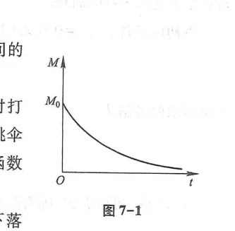
2. 力学问题：考虑空气阻力的自由落体运动
质量为 $m$ 的物体在重力与空气阻力作用下由静止下落（图 7-2）. 设空气阻力与运动速度成正比，比例系数为 $k > 0$. 取向下为正方向，根据牛顿第二运动定律 $F = ma = m\frac{dv}{dt}$：
$$m\frac{dv}{dt} = mg - kv$$
初值条件为 $v(0) = 0$. 求解可得下落速度 $v(t) = \frac{mg}{k}(1 - e^{-\frac{k}{m}t})$，当 $t \to \infty$ 时速度趋于极限收尾速度 $v_\infty = \frac{mg}{k}$.
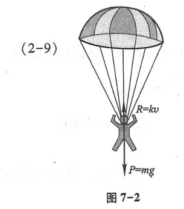
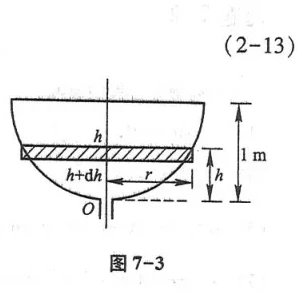
二、微分方程的基本概念与术语
- 常微分方程：含有自变量、未知函数以及未知函数的导数（或微分）的方程称为常微分方程；
- 阶数：微分方程中所出现的未知函数的最高阶导数的阶数，称为微分方程的阶；
- 解：代入微分方程能使方程恒成立的函数称为该方程的解；
- 通解：含有独立的任意常数，且任意常数的个数等于微分方程阶数的解，称为微分方程的通解；
- 特解：确定了任意常数具体数值的解称为特解；
- 初值条件与柯西问题：用来确定通解中任意常数的附加条件称为初始条件（如 $y|_{x=x_0} = y_0$）. 求微分方程满足初值条件的特解的问题称为初值问题（Cauchy Problem）.
第二节 可分离变量的微分方程
如果一阶微分方程可以化为如下形式：
$$g(y)dy = f(x)dx$$
即方程两端各自只含有单一变量及其微分，称此方程为可分离变量的微分方程. 两端直接积分即得通解：$\int g(y)dy = \int f(x)dx + C$.
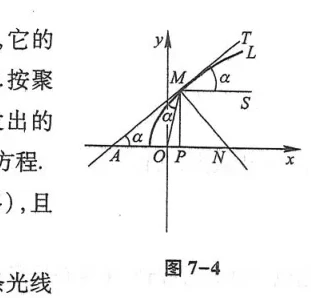
第三节 齐次方程
如果一阶微分方程可以写成 $\frac{dy}{dx} = \varphi\left(\frac{y}{x}\right)$ 的形式，称其为齐次微分方程.
求解法：引入中间变量代换 $u = \frac{y}{x}$，则 $y = ux, \frac{dy}{dx} = u + x\frac{du}{dx}$. 代入原方程得 $u + x\frac{du}{dx} = \varphi(u) \implies \frac{du}{\varphi(u) - u} = \frac{dx}{x}$，化为可分离变量方程求解，积出后再以 $\frac{y}{x}$ 替换 $u$.
第四节 一阶线性微分方程
形如 $y' + P(x)y = Q(x)$ 的微分方程称为一阶线性微分方程. 当 $Q(x) \equiv 0$ 时称为齐次方程；当 $Q(x) \not\equiv 0$ 时称为非齐次方程.
一阶线性非齐次方程 $y' + P(x)y = Q(x)$ 的通解公式为：
$$y = e^{-\int P(x)dx} \left[\int Q(x) e^{\int P(x)dx} dx + C\right]$$
伯努利方程：形如 $y' + P(x)y = Q(x)y^n$ ($n \ne 0, 1$) 的非线性方程，通过两边同除以 $y^n$ 并作代换 $z = y^{1-n}$，化为关于 $z$ 的一阶线性微分方程.
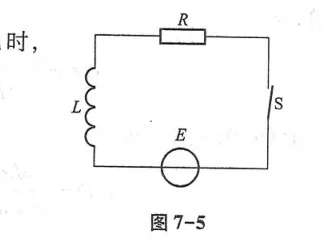
第五节 可降阶的高阶微分方程
某些特殊形式的二阶微分方程，可以通过适当的代换降低其阶数，从而化为一阶方程求解：
- $y'' = f(x)$ 型：连续对 $x$ 积分两次即可；
- $y'' = f(x, y')$ 型（不显含 $y$）：设 $p = y'$，则 $y'' = \frac{dp}{dx}$，代入化为关于 $p$ 与 $x$ 的一阶方程 $\frac{dp}{dx} = f(x, p)$；
- $y'' = f(y, y')$ 型（不显含自变量 $x$）：设 $p = y'$，由复合求导链式法则 $y'' = \frac{dp}{dx} = \frac{dp}{dy}\frac{dy}{dx} = p\frac{dp}{dy}$，化为关于 $p$ 与 $y$ 的一阶方程 $p\frac{dp}{dy} = f(y, p)$. 经典应用为两端悬挂重链条的悬链线方程推导（图 7-6、图 7-7）.
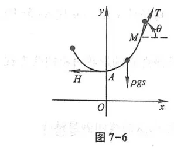
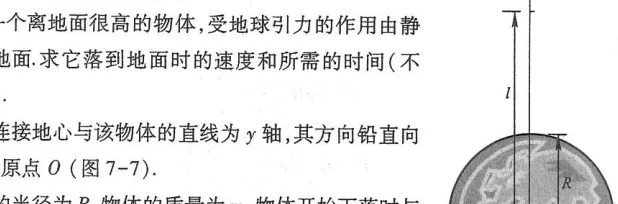
第六节 高阶线性微分方程
二阶线性微分方程的一般形式为 $y'' + P(x)y' + Q(x)y = f(x)$.
- 如果 $y_1(x)$ 与 $y_2(x)$ 是齐次方程 $y'' + P(x)y' + Q(x)y = 0$ 的两个线性无关特解（即 $\frac{y_1(x)}{y_2(x)} \ne \text{常数}$），那么： $$y = C_1 y_1(x) + C_2 y_2(x)$$ 即为齐次方程的通解；
- 设 $y^*(x)$ 是非齐次方程 $y'' + P(x)y' + Q(x)y = f(x)$ 的一个特解，而 $Y(x)$ 是对应齐次方程的通解，则非齐次方程的通解为： $$y = Y(x) + y^*(x) = C_1 y_1(x) + C_2 y_2(x) + y^*(x)$$
第七节 常系数齐次线性微分方程
方程形式为 $y'' + py' + qy = 0$，其中 $p, q$ 为常数. 作欧拉代换 $y = e^{rx}$，代入方程得特征方程：
$$r^2 + pr + q = 0$$
- 有两个不同实根 $r_1 \ne r_2$（$\Delta = p^2 - 4q > 0$）：通解为 $y = C_1 e^{r_1 x} + C_2 e^{r_2 x}$；
- 有两个相等实根 $r_1 = r_2 = r$（$\Delta = 0$）：通解为 $y = (C_1 + C_2 x)e^{rx}$；
- 有一对共轭复根 $r_{1,2} = \alpha \pm i\beta$（$\Delta < 0$）：通解为 $y = e^{\alpha x}(C_1 \cos\beta x + C_2 \sin\beta x)$. 对应弹簧振子阻尼振动衰减波形（图 7-8、图 7-9）.
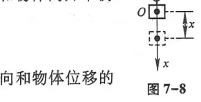
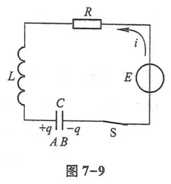
第八节 常系数非齐次线性微分方程
对于 $y'' + py' + qy = f(x)$，根据自由项 $f(x)$ 的类型，采用待定系数法求特解 $y^*$：
1. $f(x) = e^{\lambda x} P_m(x)$ 型
特解设为 $y^* = x^k Q_m(x)e^{\lambda x}$，其中 $Q_m(x)$ 是与 $P_m(x)$ 同次的待定多项式；$k$ 是 $\lambda$ 作为特征方程实根的重数（若 $\lambda$ 不是特征根，取 $k = 0$；若 $\lambda$ 是单根，取 $k = 1$；若 $\lambda$ 是二重根，取 $k = 2$），如图 7-10、图 7-11 所示.
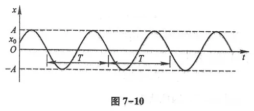
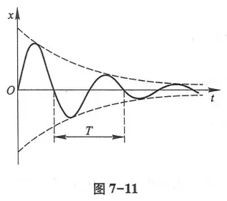
2. $f(x) = e^{\lambda x}[P_l(x)\cos\omega x + P_n(x)\sin\omega x]$ 型
特解设为 $y^* = x^k e^{\lambda x}[R_m(x)\cos\omega x + S_m(x)\sin\omega x]$，其中 $m = \max(l, n)$；当 $\lambda \pm i\omega$ 不是特征根时取 $k = 0$；当 $\lambda \pm i\omega$ 是特征方程的单根时取 $k = 1$.
共振现象（Resonance）：当外力策动频率 $\omega$ 与系统固有频率 $\omega_0$ 恰好相等且无阻尼时，$\pm i\omega$ 成为特征根，$k = 1$，特解中出现因子 $x\sin\omega t$，振幅随时间无界线性增长，引发著名的共振破坏（图 7-12）.
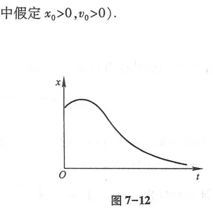
第九节 欧拉方程与微分方程组
一、欧拉方程
形如 $x^2 y'' + p x y' + q y = f(x)$（各阶导数前乘以自变量相应幂次）的方程称为欧拉方程. 作自变量代换 $x = e^t$（即 $t = \ln x$），由链式法则可将其化为常系数线性微分方程求解.
二、常系数线性微分方程组
多回路复杂电路系统或多个相互耦合的振动质点系统，其动态行为由一组联立的微分方程刻画（图 7-13）. 通常采用微分算子消元法将其转化为单个高阶常微分方程求解.
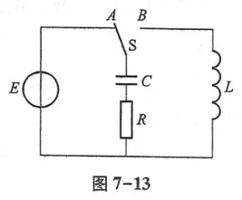
总习题七
1. 求一阶线性微分方程 $xy' - 2y = x^3 \cos x$ 的通解.
解：方程化为标准形式 $y' - \frac{2}{x}y = x^2 \cos x$ ($x \ne 0$).
这里 $P(x) = -\frac{2}{x}, Q(x) = x^2 \cos x$. 积分因子 $e^{\int P(x)dx} = e^{-2\ln|x|} = \frac{1}{x^2}$.
由通解公式：
$$y = x^2 \left[\int x^2 \cos x \cdot \frac{1}{x^2} dx + C\right] = x^2 \left[\int \cos x dx + C\right] = x^2 (\sin x + C)$$
2. 求二阶微分方程 $y'' - 4y' + 4y = 0$ 满足初始条件 $y(0) = 1, y'(0) = 0$ 的特解.
解：特征方程为 $r^2 - 4r + 4 = 0 \implies (r - 2)^2 = 0 \implies r_1 = r_2 = 2$.
对应二重根，通解为 $y = (C_1 + C_2 x)e^{2x}$. 求导：$y' = C_2 e^{2x} + 2(C_1 + C_2 x)e^{2x}$.
代入初值条件：$y(0) = C_1 = 1$；$y'(0) = C_2 + 2C_1 = 0 \implies C_2 = -2$.
故特解为：$y = (1 - 2x)e^{2x}$.